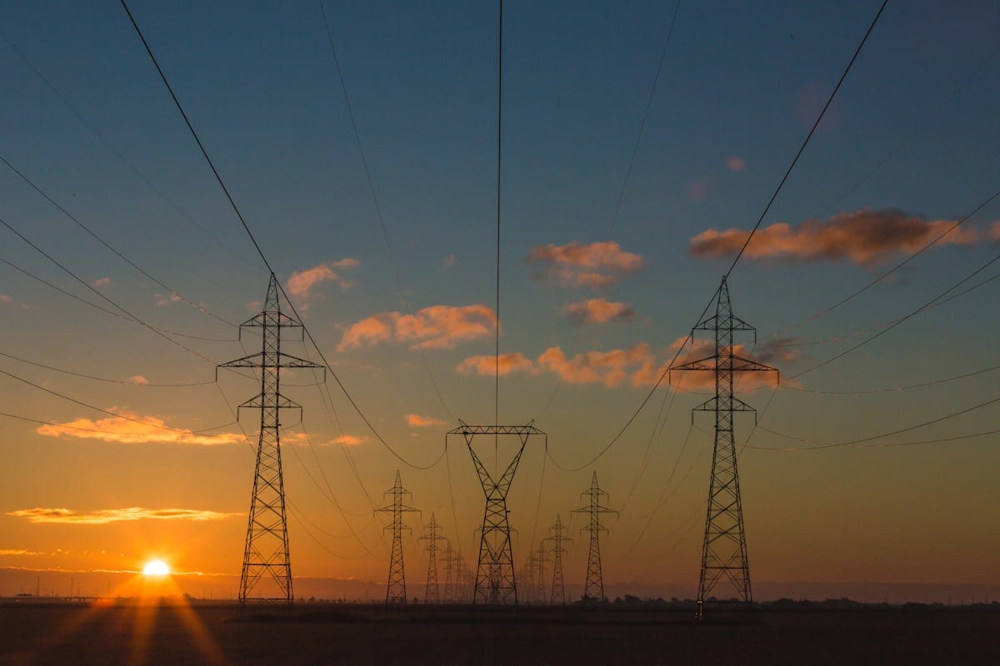
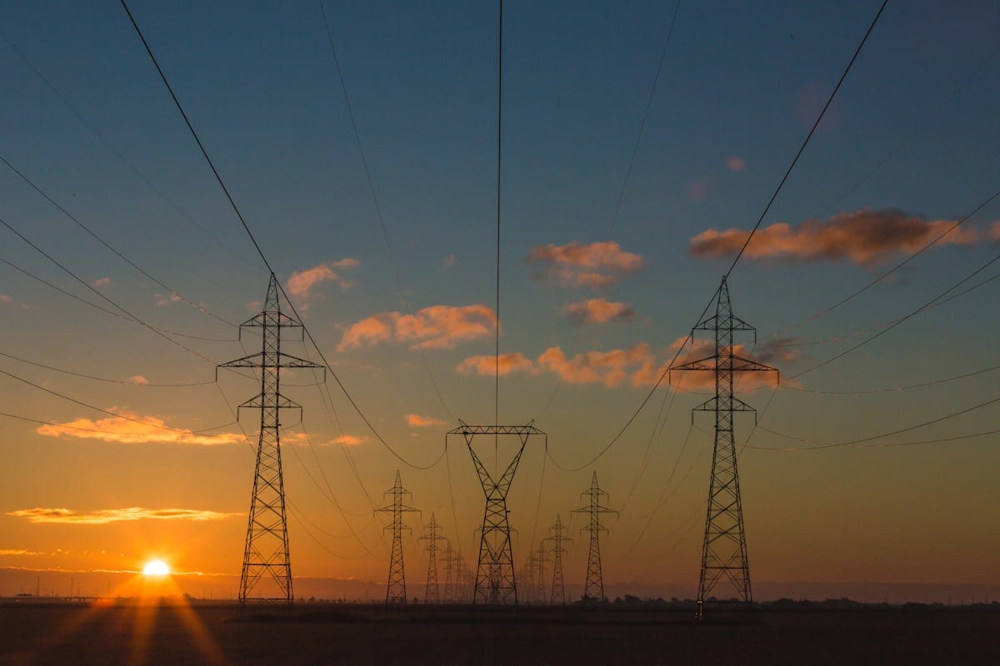

TECHNICAL SKILLS & EXTRACURRICULAR ACTIVITIES
Electrical Systems & Maintenance: Good knowledge of transformers, electrical machines, basic power electronics, and protection systems, Basic Electric Vehicles. Matlab, AutoCAD(Basics) .
Soft Skills: Adaptability, Teamwork & Collaboration, Communication Skill, Continuous Learning, Leadership.
Extracurricular Activities:Actively participated in National Service Scheme (NSS) initiatives, including community service, environmental drives, and awareness campaigns.Organized and led social welfare programs such as health camps, blood donation drives, and literacy campaigns.
 


cmbhuvan944@gmail.com